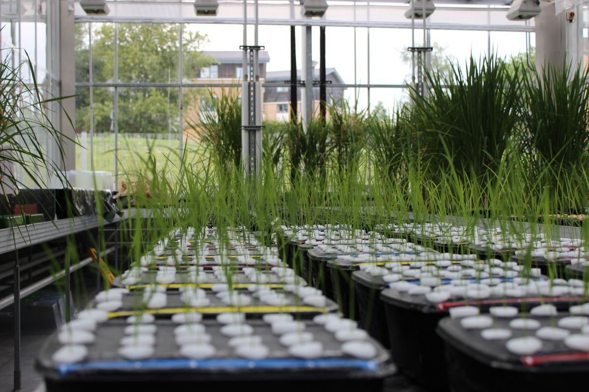
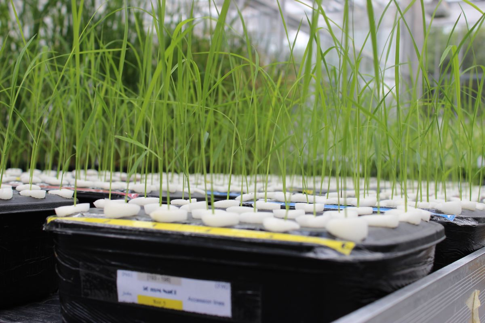
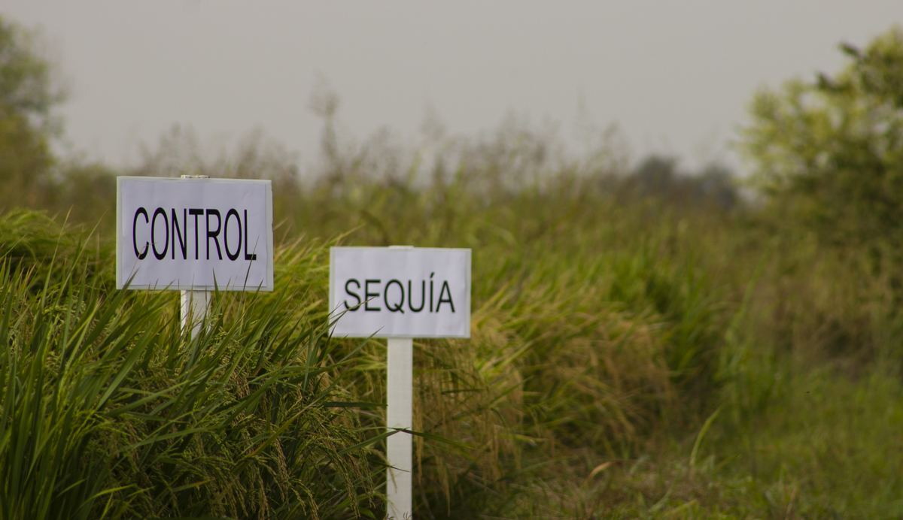
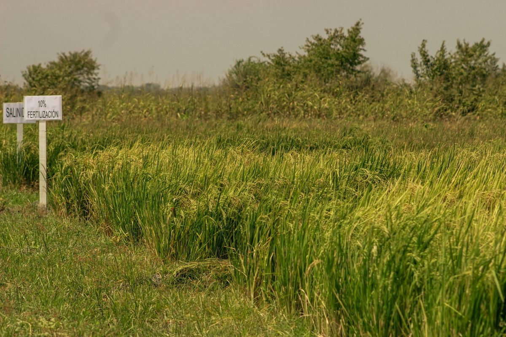
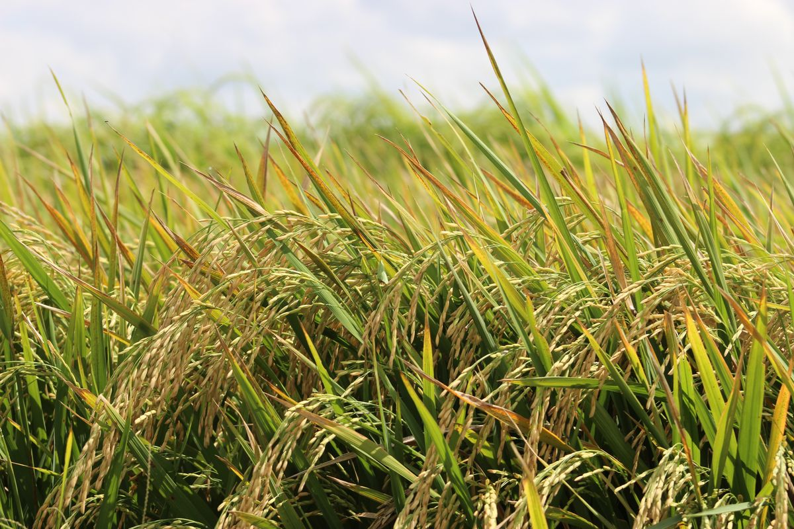
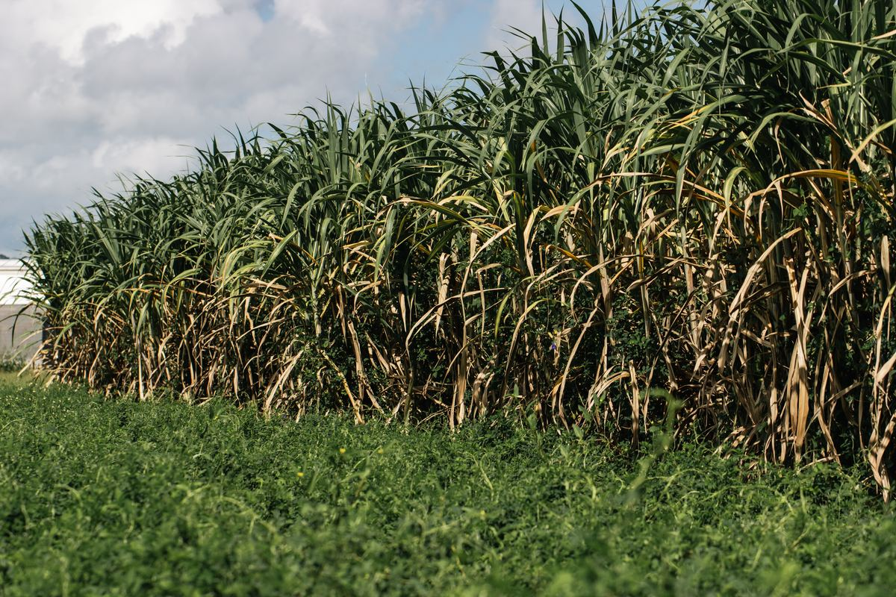
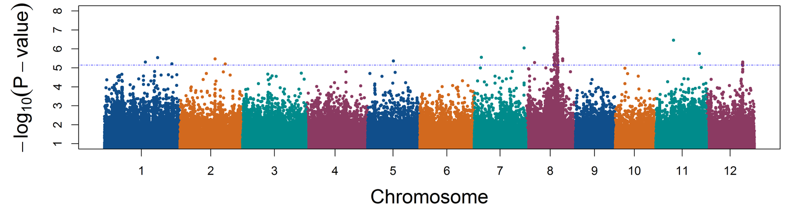
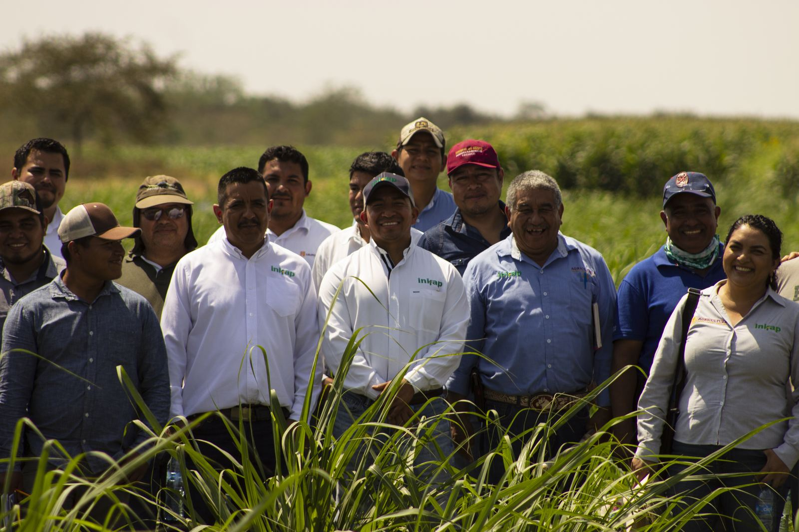

Cultivos que resisten el estrés, suelos que se regeneran.
Soy agrónomo, fisiólogo y biólogo especializado en la tolerancia de las plantas al estrés ambiental. Desarrollo genotipos resilientes a la sequía, la salinidad y las deficiencias nutricionales, y promuevo prácticas de conservación y regeneración del suelo. Soy investigador del INIFAP en el Campo Experimental Las Huastecas, en Tamaulipas, y doctor en Biología Vegetal por la Universidad de York, Reino Unido.
Publicamos en Agro Productividad la evaluación de herbicidas postemergentes selectivos en la variedad de caña Mex 68-1345. Leer artículo
Evaluación de la eficacia y fitotoxicidad de herbicidas en caña de azúcar en San Luis Potosí. Leer artículo
Ingreso al Sistema Nacional de Investigadores, Nivel I (2024–2028). Ver trayectoria
Trayectoria
Formación y experiencia
Agrónomo de formación, con maestría en fisiología vegetal en México y doctorado en biología vegetal en el Reino Unido. Desde 2010 investigo en el INIFAP.
Sistema Nacional de Investigadores Nivel I · 2024–2028
Experiencia
2010 – hoy
Investigador científico
Instituto Nacional de Investigaciones Forestales, Agrícolas y Pecuarias (INIFAP)
Campo Experimental Las Huastecas, Villa Cuauhtémoc, Altamira, Tamaulipas, México
Educación
2012 – 2017
Doctorado (PhD) en Biología Vegetal
University of York, Reino Unido
Tesis: Genome-Wide Association and Forward Genetic Studies to Identify Genes Involved in Salt Tolerance
Área: mapeo genético y tolerancia a la salinidad
2006 – 2008
Maestría en Ciencias en Fisiología Vegetal
Universidad Autónoma Agraria Antonio Narro, México · Ingeniería de Sistemas de Producción
Tema: conductancia estomática, asimilación de CO₂, transpiración y crecimiento en Aloe vera bajo déficit hídrico
1999 – 2004
Ingeniero Agrónomo en Horticultura
Universidad Autónoma Agraria Antonio Narro, México
Distinciones
2024 – 2028
Sistema Nacional de Investigadores, Nivel I
Reconocimiento a la trayectoria en investigación científica en México
Investigación
Líneas de investigación
Estudio cómo las plantas toleran el estrés ambiental, desde los genes hasta el campo. Durante mi doctorado apliqué estudios de asociación del genoma completo (GWAS) para identificar genes relacionados con la tolerancia a la salinidad en plantas modelo. Hoy me enfoco en desarrollar genotipos resilientes y en prácticas que conservan y regeneran el suelo.
Del gen al campo
Variación genéticaPaneles diversos de genotipos y plantas modelo como punto de partida.
Fenotipado bajo estrésEnsayos de sequía, salinidad y baja fertilidad en invernadero y campo.
Genes candidatosGWAS para asociar marcadores del genoma con los rasgos de tolerancia.
Selección de genotiposElección de materiales con buen rendimiento y estabilidad en condiciones adversas.
Manejo del sueloValidación en sistemas con rotación, abonos verdes y siembra directa.

Fenotipado de arroz en hidroponía, en invernadero.

Plántulas de distintas accesiones en solución nutritiva.

Ensayo de campo: parcelas control frente a sequía.

Ensayo de salinidad y dosis reducida de fertilización (10%).

Arroz en campo, cerca de la cosecha.

Caña de azúcar en campo.
Genética de la tolerancia a la salinidad
Con estudios de asociación del genoma completo (GWAS) identifico regiones y genes candidatos ligados a la tolerancia a la salinidad en plantas modelo. Estos resultados ayudan a entender mecanismos como la exclusión de sodio, el balance Na⁺/K⁺ y el ajuste osmótico, y orientan el mejoramiento de cultivos.
GWASmarcadores SNPNa⁺/K⁺plantas modelo
Fisiología del estrés y genotipos resilientes
Evalúo y selecciono genotipos que mantienen su rendimiento bajo sequía, salinidad y deficiencias nutricionales. Mido rasgos fisiológicos como la conductancia estomática, el contenido relativo de agua, la eficiencia en el uso del agua y de los nutrientes, y el desarrollo de raíces.
sequíasalinidadeficiencia nutrimentalfenotipado
Rotación con abonos verdes
Diseño rotaciones entre abonos verdes y cultivos comerciales. Las leguminosas de cobertura fijan nitrógeno, aportan materia orgánica, protegen el suelo entre ciclos y reducen la necesidad de fertilizantes de síntesis.
abonos verdesleguminosasfijación de Nmateria orgánica
Labranza mínima y siembra directa
Promuevo la siembra directa sobre rastrojo y la labranza mínima. Estas técnicas reducen la erosión y la pérdida de humedad, aumentan el carbono orgánico y la actividad biológica, y regeneran la estructura del suelo con el paso de los ciclos.
conservaciónsiembra directacarbono del sueloregeneración
Ejemplo de resultados: GWAS en arroz

Gráfico Manhattan de un GWAS para tasa relativa de crecimiento (RGR). Cada punto es un marcador del genoma; los que superan la línea punteada muestran una asociación significativa. La señal más fuerte aparece en el cromosoma 8. [confirma o ajusta la descripción]
Artículos científicos y folletos técnicos, del más reciente al más antiguo
Patishtan Pérez, J., et al. (2026). Effectiveness and phytotoxicity of selective post-emergent herbicides in the sugarcane variety Mex 68-1345. Agro Productividad.
Patishtan-Pérez, J., et al. (2025). Evaluation of the efficacy and phytotoxicity of synthetic chemical herbicides on sugarcane (Saccharum spp. L.) in San Luis Potosí, Mexico. Agro Productividad.
Patishtan Pérez, J., Vicente Hernández, Z., Ostos Treviño, C. G., Hernández Vázquez, M., & Mar Baltazar, I. A. (2024). Producción de plántulas de caña de azúcar. Folleto Técnico Núm. 43. INIFAP, Campo Experimental Las Huastecas. E-ISBN 978-607-37-1743-4.
Patishtan, J., et al. (2023). Incidencia y severidad del daño por hongos en líneas de arroz sometidas a dosis de fertilización. Tropical and Subtropical Agroecosystems.
Patishtan, J. (2022). Incremento de la patogenicidad de hongos en arroz bajo condiciones de desbalance nutricional. Ciencia Latina Revista Científica Multidisciplinar.
Chattha, W. S., Patishtan, J., Shafqat, W., & Maathuis, F. J. M. (2022). Shoot potassium content provides a physiological marker to screen cotton genotypes for osmotic and salt tolerance. International Journal of Phytoremediation, 24(4), 429–435.
Patishtan, J., Hartley, T. N., Fonseca de Carvalho, R., & Maathuis, F. J. M. (2018). Genome-wide association studies to identify rice salt-tolerance markers. Plant, Cell & Environment, 41(5), 970–982.
Ciclos biogeoquímicos, absorción, transporte y homeostasis del agua y los nutrientes
Seis módulos que siguen cada elemento del ecosistema a la molécula: del ciclo en el suelo y la atmósfera a la raíz, los tejidos, las células, los orgánulos, los transportadores y la regulación génica, con sus consecuencias en arroz, maíz, sorgo, caña de azúcar y soya.
5Funciones fisiológicas, bioquímicas y moleculares
6Deficiencias, excesos y toxicidad
7Respuestas adaptativas y mecanismos de regulación
8Implicaciones agronómicas
El agua y el carbono no se tratan como nutrientes minerales: el agua se estudia por su potencial hídrico, su déficit y el anegamiento; el carbono, por la entrada de CO₂, su fijación y la respuesta al CO₂ elevado. El sodio se presenta como nutriente funcional en algunas plantas C₄ y halófitas, y como el ion tóxico de los suelos salinos.
Investigación básica
Transportadores, sensores y regulación
Avances moleculares sobre la adquisición y la homeostasis de cada elemento. [en preparación]
Investigación aplicada
Del laboratorio al campo
Ensayos del INIFAP en las Huastecas: eficiencia de uso de nutrientes, salinidad y sequía en caña de azúcar, arroz y sorgo. [en preparación]
Versión en desarrollo · última actualización: 6 de noviembre de 2026
Cultivos
Cultivos que estudio
Trabajo con seis cultivos de importancia para el trópico y subtrópico de México. Cada uno tiene su propia página con variedades evaluadas, métodos y resultados.
Desde el Campo Experimental Las Huastecas del INIFAP evaluamos variedades, generamos recomendaciones de manejo y estudiamos la tolerancia a la salinidad de la caña de azúcar para la región cañera del sur de Tamaulipas, el oriente de San Luis Potosí y el norte de Veracruz.
Rendimiento comercial
76 t ha⁻¹caña planta · 58 en soca · 55 en resoca
Potencial con riego
100–150 t ha⁻¹tierra negra y suelos tipo barrote
Densidad objetivo
120–150 miltallos molederos por hectárea
Cosecha
14–16 mesesen planta · 12–14 meses en socas
Líneas de trabajo
Adaptación de variedades nuevas
Evaluamos en campo el desempeño de variedades recientes en la región Huasteca: Mex 05-10, Mex 05-19, Mex 05-41, Mex 05-50, Mex 08-3387, Mex 08-3391, Mex 08-3394, Mex 08-3398 y Mex 08-3406.
Evaluación agroindustrial y DHE
Caracterizamos ocho variedades según las directrices de Distinción, Homogeneidad y Estabilidad (DHE) de la UPOV y comparamos su rendimiento de caña y azúcar para identificar las mejores para la producción.
Tolerancia a la salinidad
Medimos cómo responden la parte aérea y la raíz a concentraciones crecientes de NaCl, para seleccionar materiales aptos para suelos salinos.
Manejo de malezas
Evaluamos la eficacia y fitotoxicidad de herbicidas postemergentes en la variedad Mex 68-1345 para proteger el cultivo durante su periodo crítico.
Plántulas de yema individual
Estandarizamos un protocolo de producción de plántulas en charola, evaluado en ColMex 94-8 y validado en más de 90 genotipos.
Hacia la genómica
Usamos las plántulas como plataforma uniforme para evaluar genotipos bajo estrés abiótico, como base para mapeo genético y búsqueda de genes candidatos.
Comportamiento agroindustrial de ocho variedades
Promedio de planta, soca y resoca 1 en el sitio de selección de cada variedad, ordenado por toneladas de azúcar por hectárea.
Variedad Progenitores
Origen
Condición
Caña (t ha⁻¹)
Azúcar (t ha⁻¹)
Sacarosa (%)
Fibra (%)
Mex 94-8 L 57-7 × SP 71-5574
CE INIFAP Tecomán, Colima
Riego
132.00
21.52
16.29
12.53
Mex 96-35 Mex 64-649 × Mex 79-431
CRT de la Caña de Azúcar, ISP
Zona húmeda
129.60
18.51
14.23
11.66
Mex 95-59 SP 72-4790 × ?
CIDCA Huasteca Potosina, CE El Estribo
Zona húmeda
110.97
16.34
16.42
11.74
LTMex 94-2 CP 72-2086 × ?
CRT de la Caña de Azúcar, ISP
Zona húmeda
131.50
16.30
12.42
12.76
Mex 91-662 Mex 74-1903 × ?
Asociación para la Mejora de la Caña, La Gloria
Zona húmeda
110.58
14.55
14.87
15.07
MotzMex 01-403 MY 54-64 × Co 467
CE Regional Motzorongo
Zona húmeda
87.55
14.36
16.43
12.28
ICPMex 92-1420 CP 59-22 × ?
CE Regional San Cristóbal
Temporal
62.64
9.52
15.19
14.50
Mex 97-20 Mex 65-1418 × CP 72-2086
CE Regional San Cristóbal
Temporal (zona seca), solo resoca
57.40
6.52
15.85
14.94
Fuente: fichas DHE (UPOV) de cada variedad, CIDCA A.C. Las cifras vienen de sitios y condiciones distintas, así que sirven para describir cada variedad más que para compararlas entre sí.
Peso de la parte aérea y de la raíz con 0 a 200 mM de NaCl, como porcentaje del testigo. Hasta 100 mM la parte aérea no difiere significativamente (77–100 %). Con 150 mM baja a 43 %, y con 200 mM la raíz baja a 38 % y ninguna de las 5 plantas conserva hoja verde. Media de 5 plantas ± error estándar; letras distintas indican diferencia significativa (ANOVA y Tukey, p < 0.05). Datos propios, medición del 9 de junio de 2025.
Producción de plántulas de yema individual
Las plántulas de yema individual permiten establecer semilleros sanos y uniformes con mucho menos material vegetativo. Estandarizamos un protocolo integral evaluado en la variedad ColMex 94-8 y validado en más de 90 genotipos de caña de azúcar.
Densidad en vivero
323 m⁻²en charola de 50 cavidades, contra 120 en bolsa y 169 en vaso
Listas para trasplante
30 díasdespués de la siembra
Plántula al trasplante
8–10 gy 13–14 cm de tallo
Genotipos validados
>90con el mismo protocolo
Selección de semilla. Tallos de 9 meses; las yemas superiores tienen mayor vigor para producir plántulas.
Corte e hidratación. Trozos de 2.5 cm con la yema al centro, hidratados 10 min en NPK 0.75 g L⁻¹ más enraizador 5 mL L⁻¹.
Siembra y germinación. Charolas forestales de 50 cavidades (~65 g de sustrato por cavidad), apiladas de 4 a 6 bajo plástico negro por 5–7 días a 25–30 °C. Compost local o sustrato comercial: 85–100 % de germinación.
Riego. Desde los 7 días, 0.5 L por charola y después 400–600 mL diarios hasta los 30 días, con humedad cercana al 70 %. Con urea, MAP y K₂SO₄ a 0.75 g L⁻¹, el pH del agua baja de 7.5 a 6.2.
Fertilización. Dos veces por semana, solución de urea, MAP y K₂SO₄ a 0.75 g L⁻¹ cada uno (427 ppm N, 170 ppm P y 311 ppm K⁺); unos 4 L por charola en 30 días. Trichoderma más NPK dio la mayor biomasa aérea.
Poda. A los 30 días, unos tres días antes del trasplante, a 1 cm sobre la base de la última hoja con lígula desprendida.
Transporte y tratamiento. A los 33 días, en taras, hidratadas con enraizador (5 mL L⁻¹) y tratadas contra enfermedades de raíz.
Trasplante. 0.7 m entre plantas y 1.4 m entre surcos (10,142 plantas ha⁻¹), o marco tipo piña con fertirrigación (14,280 plantas ha⁻¹).
Herbicidas postemergentes
Las malezas pueden reducir la cosecha de caña entre 10 y 70 %. El periodo crítico va de los 90 a los 120 días después de la siembra, antes del cierre del dosel; ahí la competencia puede quitar más del 50 % del rendimiento sin recuperación posterior.
En el ejido López Rayón (González, Tamaulipas) evaluamos diez tratamientos en la variedad Mex 68-1345, sobre malezas de ocho semanas, en parcelas de 1,250 m² con la escala visual EWRS a los 7, 14 y 21 días después de la aplicación.
Maleza
Herbicidas con control suficiente a muy bueno (7–21 días)
Resultado: ametrina + atrazina, ametrina + atrazina + diurón y ametrina + 2,4-D lograron 87.5–93 % de control. Causaron 7–12.5 % de fitotoxicidad a los 7 días, pero el cultivo se recuperó a 1–3.5 % a los 21 días. La atrazina sola fue la menos fitotóxica (3.5–7 %), aunque solo controló 70–80 %.
El paso hacia la genómica
Las plántulas de yema individual dan material uniforme para evaluar genotipos en condiciones controladas y de estrés abiótico, como la absorción y distribución de K⁺ y Na⁺ bajo salinidad. Con esta tecnología hemos trabajado con unos 93 genotipos. Es el mismo enfoque que usé con 306 accesiones de arroz en GWAS, y el siguiente paso es aprovechar el pangenoma de la caña, el mapeo genético y la búsqueda de genes candidatos.
Paquete tecnológico
Resumen de los componentes tecnológicos del INIFAP Las Huastecas para caña de azúcar perenne, de riego y temporal.
Preparación del terreno
Subsuelo: arado de cinceles para romper la compactación que dejan cosechadoras y camiones.
Barbecho: arado a 25–30 cm para voltear la capa superior y eliminar restos de soca o resoca.
Cruza y rastra: desmenuzan terrones y dejan una cama suelta para bordear y sembrar.
Nivelación, surcado y trazo de riego: necesarios en siembras con riego.
Siembra y variedades
10–12 t ha⁻¹ de semilla de 6 a 9 meses de edad, libre de gusano barrenador, trozada después de depositarla.
Periodo óptimo de siembra de mayo a septiembre; con riego, algunos productores de Cd. Valles siembran de enero a marzo.
Rodado, aspersión y temporal: surcos a 1.4 m, de 35–40 cm de profundidad, en doble cordón.
Goteo: doble hilera tipo piña a 1.8–2.0 m entre centros, 40–50 cm entre hileras.
Variedades recomendadas para la Planicie Huasteca: CP 72-2086 y NCo 310, con ciclo de 496–550 días en planta.
Riego
En germinación, riegos ligeros de 8–14 cm de lámina según suelo y clima.
De 6 a 10 riegos por ciclo; los dos primeros tras cada fertilización y después cada 3 a 4 semanas, según la disponibilidad de agua.
Fertilización y fertirrigación
Planta con riego: 500 kg ha⁻¹ de 22-11-11-6 al fondo del surco más 300 kg de sulfato de amonio (140-55-55).
Socas: 500 kg ha⁻¹ de 22-11-11-6 en banda dos meses después del corte (110-55-55). Temporal: 100-138-55 al fondo del surco.
En suelos alcalinos, 20–35 kg ha⁻¹ de sulfato de zinc monohidratado, ajustando con análisis de suelo.
Goteo: 200–300 unidades de N, 90–130 de P y 200–300 de K, aplicadas por fertirrigación en cuatro etapas: agua sola, ácidos para llevar el pH a 5.5–6.5, fertilizantes solubles con micronutrientes y lavado final.
Plagas, enfermedades y malezas
Sin enfermedades de importancia económica, salvo el carbón en NCo 310, en aumento en el sur de Tamaulipas.
Plagas principales: mosca pinta (Aeneolamia postica), gusano barrenador (Diatraea y Eoreuma), rata y chinche de encaje. Para barrenador se usa control biológico con Trichogramma spp.
Malezas: zacate Johnson, zacate Guinea, coquillo y numerosas de hoja ancha. Mezclas postemergentes evaluadas: ametrina + atrazina + diurón (2.5 kg ha⁻¹), ametrina + atrazina (2.5 kg ha⁻¹) o ametrina + 2,4-D amina (6 L ha⁻¹), a 200 L ha⁻¹ con pH ajustado a 5.5.
Muestreamos en cinco puntos por parcela (cinco de oros). En cada punto se cuentan los tallos molederos en 10 m lineales y se toman 10 tallos al azar para medir:
Variable
Unidad
Población de tallos y peso de caña por metro lineal
tallos m⁻¹ · kg m⁻¹
Índice de clorofila
SPAD
Peso y longitud del tallo
kg · m
Número de canutos; diámetro y longitud basal, intermedia y apical
# · cm
Canutos dañados y larvas de barrenador
#
Grados Brix basal, intermedio y apical
%
Conductividad eléctrica y humedad del suelo
dS m⁻¹ · %
Kit de muestreo: báscula, bolsas de papel, cinta masking, cuatro cuadros para maleza, dos mesas, formatos, lápices, marcadores, pala, flexómetro, regla métrica, SPAD, tablas de apoyo, tres botes y vernier.
Para obtener el formato de captura, escribe a patishtan.juan@gmail.com con una breve explicación de tu interés.
Colección de variedades en evaluación
97 materiales, entre variedades comerciales, líneas experimentales y 9 cruzas, de los cuales 6 son de semilla in vitro (marcados con borde).
Ver la lista completa
ColMex 95-1413CL 47-143 x CO 453RB 85-5113ColMex 98-12CP 52-68 x CO 453RB 84-5257ColMex 00-228Mex 55-131 x Mex 75-1632ColMex 98-19Mex 57-1285 x Mex 57-473PR 87-2078 x NA 63-90Mex 59-658 x CO-453ColMex 98-100ColMex 01-04Mex 60-1418 x Mex 75-17-05ColMex 00-217ColMex 95-27LCP 81-10 x POJ 221Mex 95-03Mex 95-59Mex 96-60EMex 00-29EMex 01-21EMex 01-323EMex 02-05EMex 02-59EMex 03-198CP 72-2086CP 88-1165IMMex 98-13IMMex 95-25ATEMex 96-40Co 290LCP 84-385Mex 68-P-23Mex 79-431CP-29-116 x Mex-69-1426Mex 68-1345XMex 91-917RD 7511CP 88-1508NCO 331IMMex 91-589NCO 0290NCO 310MOTZMex 01-403Mex 94-8Mex 96-35Mex 91-662LTMex 94-2Mex 97-20ICPMex 92-1240Mex 05-19Mex 05-41Mex 05-10Mex 05-50Mex 08-3406Mex 08-3394Mex 08-3398Mex 08-33-91Mex 08-3387EMex 05-225Mex 96-52EMex 01-179Emex 06-159Mex 07-2253Mex 07-2219Mex 07-2200Mex 08-2376Mex 08-2209CG 97-97Mex 06-23EMEX 05-222Mex 10-2165CG 02-163LGMex 92-156Mex 69-290ITV 92-1424MEX 09-66MEX 09-208MEX 09-289MEX 09-212MEX 09-321MEX 09-132MEX 09-93MEX 09-341MEX 09-312MEX 09-333CP-05-1201 (IN VITRO)CP 95-1252 (IN VITRO)CP 95-59 (IN VITRO)CP 92-1420 (IN VITRO)CP 72-2086 (IN VITRO)Mex 69-290 (IN VITRO)Mex 09-219Mex 09-2216Mex 10-2117
Producción de semilla
Durante el programa de producción de semilla para cañeros de la región Huasteca, ya concluido, ofrecimos semilla in vitro de CP 05-1201, CP 96-1252, Mex 95-59, CP 92-1420, CP 72-2086 y Mex 69-290, que garantiza pureza genética y sanidad, además de semilla convencional de ColMex 94-8.
Publicaciones sobre caña de azúcar
Patishtan Pérez, J., Vicente Hernández, Z., Ostos Treviño, C. G., Hernández Vázquez, M., & Mar Baltazar, I. A. (2024). Producción de plántulas de caña de azúcar. Folleto Técnico Núm. 43. INIFAP, Campo Experimental Las Huastecas. E-ISBN 978-607-37-1743-4.
Patishtan Pérez, J., et al. (2026). Effectiveness and phytotoxicity of selective post-emergent herbicides in the sugarcane variety Mex 68-1345. Agro Productividad.
Patishtan-Pérez, J., et al. (2025). Evaluation of the efficacy and phytotoxicity of synthetic chemical herbicides on sugarcane (Saccharum spp. L.) in San Luis Potosí, Mexico. Agro Productividad.
Patishtan Pérez, J. (2025). Eficacia y fitotoxicidad de herbicidas postemergentes en caña de azúcar. ATAM 2025.
Ponencia
Docencia
Docencia y capacitación
Materia · Tecnológico Nacional de México, Campus Altamira
Agroecología
Programa
Producción Pecuaria Tropical
Periodo
agosto–diciembre 2026
Docente
Dr. Juan Patishtan Pérez
El curso estudia el rancho, la parcela y el territorio como ecosistemas manejados por personas, con flujos de energía, ciclos de nutrientes, interacciones entre especies y relaciones sociales y económicas. Todas las ideas se aterrizan en ejemplos de producción pecuaria tropical del noreste de México.
Unidades del curso
Unidad 1Introducción a la agroecologíaPresentación · Manual · Tarea · Examen · Calificación
En la presentación: clic, → o Espacio para avanzar · ← para regresar · N muestra las notas · F pantalla completa.
Competencia, temas y actividades de la unidad
Competencia: explica el concepto, los principios y el campo de estudio de la agroecología, y los utiliza para analizar de manera crítica un sistema de producción agropecuario tropical en sus dimensiones ecológica, económica y social.
Temas
1.1Concepto, principios y campo de estudio de la agroecología
1.2La agroecología como ciencia, práctica y movimiento social
1.3Relación entre agroecología, agricultura y sustentabilidad
1.4Papel del agrónomo en la construcción de sistemas agroalimentarios sustentables
Actividades
A1Mi rancho bajo la lupa de los 10 elementos de la FAO
A2Zonificación agroecológica del rancho
A3Debate estructurado: “La agroecología puede alimentar a la población de México”
Unidad 2Estructura y funcionamiento de los ecosistemasPresentación · Manual · Tarea · Examen · Calificación
En la presentación: clic, → o Espacio para avanzar · ← para regresar · N muestra las notas · F pantalla completa.
Competencia, temas y actividades de la unidad
Competencia: explica la estructura y el funcionamiento de los ecosistemas, en particular los flujos de energía, los ciclos de nutrientes y las relaciones tróficas, y los aplica para analizar un agroecosistema pecuario tropical como un sistema con entradas, procesos y salidas.
Temas
2.1Principios ecológicos y niveles de organización
2.2La parcela agrícola como sistema: entradas, procesos e interacciones y salidas
2.3Componentes bióticos y abióticos y sus interacciones
2.4Niveles tróficos, cadenas alimentarias y redes tróficas
2.5Flujo de energía y productividad primaria y secundaria
2.6Dinámica, estabilidad y resiliencia de los ecosistemas
2.7Ciclos del agua, carbono, nitrógeno, fósforo, potasio y azufre
Actividades
A1El potrero como caja negra: balance de nitrógeno
A2La red trófica del potrero
A3Infografía de un ciclo biogeoquímico en el rancho
Unidad 3Próximamente
Recurso interactivo
Explorador de ciclos biogeoquímicos
Elige un ciclo para ver cómo se mueve cada elemento entre la atmósfera, el suelo, el agua y los seres vivos.
Ciclo del agua
El agua circula continuamente entre los océanos, la atmósfera y la tierra. La energía del Sol la evapora, se condensa en nubes y regresa a la superficie como precipitación.
Importancia: regula el clima y distribuye agua dulce para todos los seres vivos.
Tipo de ciclo
Gaseoso / hidrológico
Principal reservorio
Océanos, ≈97% del agua
Motor
Energía solar
Ciclo del carbono
El carbono pasa de la atmósfera (como CO₂) a los seres vivos mediante la fotosíntesis, y regresa a ella por la respiración, la descomposición y la quema de combustibles fósiles.
Importancia: es la base de las moléculas orgánicas y controla el efecto invernadero.
Tipo de ciclo
Gaseoso
Reservorios
Atmósfera, océanos, rocas, suelo y biomasa
Forma atmosférica
CO₂
Ciclo del nitrógeno
Aunque el 78% del aire es nitrógeno (N₂), la mayoría de los organismos no puede usarlo directamente. Bacterias del suelo lo transforman en compuestos que las plantas sí pueden absorber.
Importancia: es esencial para formar proteínas y ADN.
Tipo de ciclo
Gaseoso
N₂ en el aire
78%
Formas para plantas
NH₄⁺ y NO₃⁻
Ciclo del fósforo
Es un ciclo sedimentario y lento: el fósforo no pasa por la atmósfera. Se libera de las rocas por erosión, llega al suelo y al agua, y es absorbido por plantas y animales.
Importancia: forma parte del ADN, el ATP (energía celular), los huesos y los dientes.
Tipo de ciclo
Sedimentario
Fase atmosférica
No tiene
Forma para plantas
PO₄³⁻ (fosfato)
Ciclo del potasio
El potasio proviene de minerales de las rocas. Al desgastarse, se disuelve en el suelo, las plantas lo absorben por las raíces y vuelve al suelo cuando los organismos se descomponen.
meteorización→absorción por raíces→retorno por descomposición→lixiviación
Importancia: regula el agua en las células, activa enzimas y fortalece a las plantas.
Tipo de ciclo
Sedimentario
Origen
Minerales (feldespatos, micas)
Forma para plantas
K⁺
Capacitación
Cursos
Cursos y talleres para técnicos, productores y estudiantes, basados en los resultados de investigación del Campo Experimental Las Huastecas.
Caña de azúcar · [duración]
Producción de plántulas por yema individual
Selección de semilla, extracción de yemas, tratamiento, germinación en charola y trasplante.
Apoyo técnico basado en evidencia para productores, ingenios y empresas agrícolas, organizaciones y escuelas que enfrentan sequía, suelos salinos o pérdida de fertilidad.

Demostración de caña de azúcar con productores y técnicos, 16 de marzo de 2023.
Genotipos
Evaluación de variedades tolerantes
Ensayos para comparar variedades o líneas bajo sequía, salinidad o baja fertilidad y elegir las más estables.
Suelos
Diagnóstico y manejo de suelos
Interpretación de análisis, manejo de suelos salinos y planes de transición a rotación con abonos verdes y siembra directa.
Formación
Talleres y capacitación
Cursos prácticos para técnicos, productores y docentes sobre estrés en cultivos y agricultura de conservación.